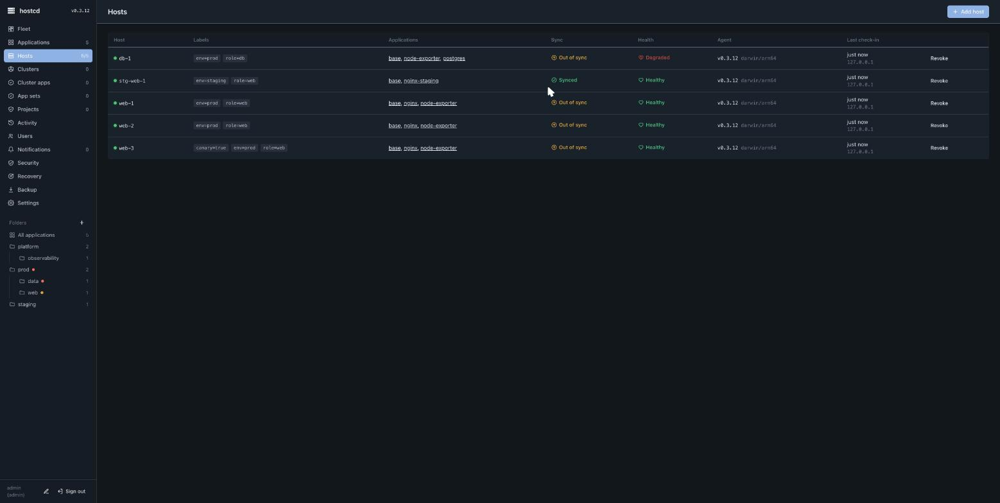

hostcd — install
hostcd is two binaries managed by systemd: hostcd-server (one per fleet) and hostcd-agent (one per managed host). Linux with systemd is required. The supported host families are Ubuntu/Debian and RHEL/Rocky.
Install the control plane
Run on the machine that will be your control plane (needs root for the systemd unit):
curl -fsSL https://github.com/Inblade/hostcd-dist/releases/latest/download/install.sh \
| sudo env HOSTCD_RELEASE_BASE=https://github.com/Inblade/hostcd-dist/releases/latest/download \
sh -s -- server
The installer downloads the signed binary, verifies it against the release SHA256SUMS (and cosign provenance when cosign is installed), installs the hostcd-server systemd unit, and generates /etc/hostcd/server.env with a random admin password and a shared agent-enrolment token. By default the server listens on 127.0.0.1:8080 — put TLS or a reverse proxy in front, or pass -tls-cert/-tls-key, before exposing it.
Open the UI and sign in as admin with the generated password (read it from /etc/hostcd/server.env).
Enrol a host
The simplest path is Add host → Install over SSH from the UI: the server installs the agent over SSH and mints a per-host token automatically. To install by hand on the host instead:
curl -fsSL https://github.com/Inblade/hostcd-dist/releases/latest/download/install.sh \
| sudo env HOSTCD_RELEASE_BASE=https://github.com/Inblade/hostcd-dist/releases/latest/download \
sh -s -- agent https://<control-plane-host>:8080 <TOKEN>
The agent writes its token to /etc/hostcd/agent.env, starts dialing out, and appears in Hosts within seconds.

Verify a download yourself
Every release publishes SHA256SUMS and a keyless cosign bundle. To check an artifact before trusting it:
cosign verify-blob SHA256SUMS \
--bundle SHA256SUMS.cosign.bundle \
--certificate-identity-regexp '^https://github.com/Inblade/hostcd/\.github/workflows/release\.yml@refs/tags/v.+$' \
--certificate-oidc-issuer https://token.actions.githubusercontent.com
sha256sum -c SHA256SUMS
The public mirror is not re-signed, so the cosign identity stays the source repository's release workflow regardless of which mirror you downloaded from.
Air-gapped / private mirror
Point HOSTCD_RELEASE_BASE at your own mirror (it may be plain HTTP on a trusted network). Pin the manifest out of band with HOSTCD_EXPECTED_SHA256SUMS_SHA256=<sha256 of SHA256SUMS> so the installer fails closed if the mirror is wrong or tampered.
Next: concepts · operations · security.
This page is also available as Markdown, indexed in llms.txt for AI assistants.